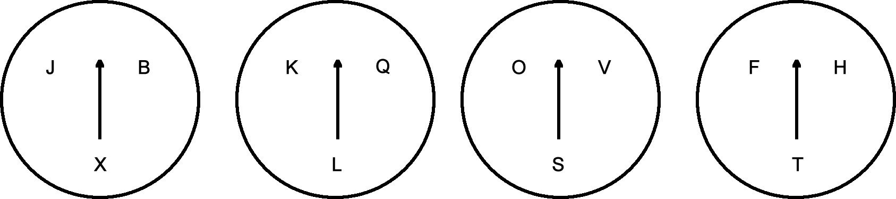

Before you is a lock "with a secret" $($see the picture$)$.
If you put the arrows on the desired letters, you will get the keyword and the lock will open. What is this word?
In the second circle, the arrow must be placed on the letter L, since words can only start with BL and not with BK or BQ.
Thus, the first two letters of the word are BL. The third circle is the only one with a vowel in it so the arrow in this circle must be put on the letter O. For the fourth circle, we consider the possible words that can be formed. These are: BLOF, BLOH and BLOT. The only real word out of these three is BLOT.